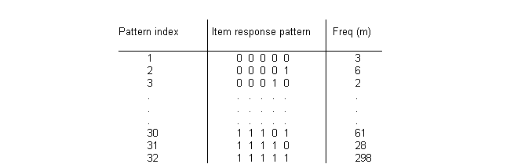
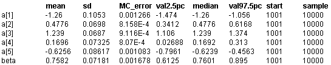

![[lsat0]](lsat0.bmp) LSAT: item response
LSAT: item response
Section 6 of the Law School Aptitude Test (LSAT) is a 5-item multiple choice test; students score 1 on each item for the correct answer and 0 otherwise, giving R = 32 possible response patterns.Boch and Lieberman (1970) present data on LSAT for N = 1000 students, part of which is shown below.

The above data may be analysed using the one-parameter Rasch model (see Andersen (1980), pp.253-254; Boch and Aitkin (1981)). The probability p
jk
that student
j
responds correctly to item
k
is assumed to follow a logistic function parameterized by an `item difficulty' or threshold parameter
a
k
and a latent variable
q
j
representing the student's underlying ability. The ability parameters are assumed to have a Normal distribution in the population of students. That is:
logit(p
jk
) =
q
j
-
a
k
, j = 1,...,1000; k = 1,...,5
q
j
~ Normal(0,
t
)
The above model is equivalent to the following random effects logistic regression:
logit(p
jk
) =
bq
j
-
a
k
, j = 1,...,1000; k = 1,...,5
q
j
~ Normal(0, 1)
where
b
corresponds to the scale parameter (
b
2
=
t)
of the latent ability distribution. We assume a half-normal distribution with small precision for
b
;
this represents vague prior information but constrains
b
to be positive. Standard vague normal priors are assumed for the
a
k
's. Note that the location of the
a
k
's depend upon the mean of the prior distribution for
q
j
which we have arbitrarily fixed to be zero. Alternatively, Boch and Aitkin ensure identifiability by imposing a sum-to-zero constraint on the
a
k
's. Hence we calculate a
k
=
a
k
-
a
bar
to enable comparision of the
BUGS
posterior parameter estimates with the Boch and Aitkin marginal maximum likelihood estimates.
BUGS
language for LSAT model
model
{
# Calculate individual (binary) responses to each test from multinomial data
for (j in 1 : culm[1]) {
for (k in 1 : T) {
r[j, k] <- response[1, k]
}
}
for (i in 2 : R) {
for (j in culm[i - 1] + 1 : culm[i]) {
for (k in 1 : T) {
r[j, k] <- response[i, k]
}
}
}
# Rasch model
for (j in 1 : N) {
for (k in 1 : T) {
logit(p[j, k]) <- beta * theta[j] - alpha[k]
r[j, k] ~ dbern(p[j, k])
}
theta[j] ~ dnorm(0, 1)
}
# Priors
for (k in 1 : T) {
alpha[k] ~ dnorm(0, 0.0001)
a[k] <- alpha[k] - mean(alpha[])
}
beta ~ dflat()T(0, )
}
Note that the data are read into
BUGS
in the original multinomial format to economize on space and effort. The 5 times 1000 individual binary responses for each item and student are then created within
BUGS
using the index variable culm (read in from the data file), where culm[i] = cumulative number of students recording response patterns 1, 2, ..., i; i <= R.
Data
( click to open )
Inits for chain 1
Inits for chain 2
( click to open )
Results
A 1000 update burn in followed by a further 10000 updates gave the parameter estimates
